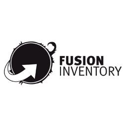

La Gestion du Patrimoine informatique d'une entreprise
Une gestion efficace du parc informatique d'une entreprise permet d'éviter les pannes et de diminuer les dépenses liées au fonctionnement du système informatique, assurant ainsi sa continuité et représentant un aspect crucial pour l'entreprise. Elle englobe diverses activités visant à maintenir, améliorer et optimiser toutes les ressources informatiques de l'entreprise.
Les différentes tâches pour assurer la gestion du patrimoine sont les suivantes :
Identifier et géolocaliser tous les composants du parc informatique.
Assurer la maintenance et le dépannage.
Organiser des formations et promouvoir les bonnes pratiques.
Établir des procédures opérationnelles.
Choisir et gérer les prestataires de services pour le dépannage, l'hébergement et les logiciels.
On peut utiliser les outils de gestion tels que GLPI, OCSInventory, FusionInventory.
GLPI : Le Gestionnaire Libre de Parc Informatique est une solution open source de gestion des services informatiques et des actifs matériels et logiciels. Il permet de centraliser la gestion des incidents, des demandes d'assistance, de suivre les actifs informatiques, de gérer les contrats, les fournisseurs et les utilisateurs.
OCSInventory NG: C'est une application open source de gestion des inventaires informatiques. Elle permet de collecter automatiquement des informations sur les équipements matériels et logiciels d'un parc informatique, facilitant ainsi la gestion des actifs, la surveillance des configurations et la gestion des licences logicielles.
FusionInventory : FusionInventory est une extension open source d'OCS Inventory NG, offrant des fonctionnalités supplémentaires pour la gestion des inventaires informatiques. Elle permet notamment la découverte des équipements réseau, la gestion des paquets logiciels, la surveillance des imprimantes et des consommables
